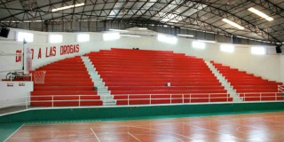
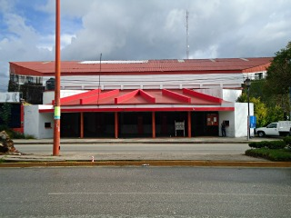
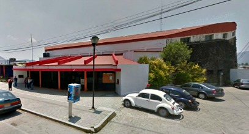
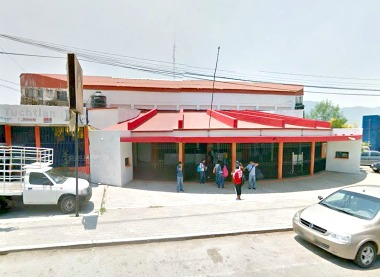
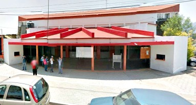

En este auditorio municipal o también conocido como auditorio de basquetbol se presentan diversos eventos tanto deportivos como culturales, en los que destacan encuentros de basquetbol, la comida del recuerdo, entre otros eventos.
Localizada a 82.1 kilometros de la ciudad de Tuxtla Gutiérrez, en carretera internacional y/o boulevard Juan Sabines Gtz.
Partiendo de Tuxtla Gutiérrez
Ubíquese en autopista Tuxtla-San Cristóbal, recorrera 82,1 kilometros hasta llegar a el primer semaforo llegando a San Cristóbal, ahí doblará a su izquierda tomando la calle que lo lleva al centro como referencia encontrara a un deposito y el hospital de las culturas, se sigue derecho hasta llegar al crucero de la carretera panamericana y/o internacional como refrencia encontrará la marisquería los 7 mares, ahí doblará a su derecha rumbo al boulevard Juan Sabines sobre la carretera San Cristóbal-Comitán antes de llegar a la calle Fransisco Sarabia encontrará el auditorio municipal entre policía municipal y llantas Tuchtlan.
Saliendo de la plaza de la paz usted debe tomar la avenida Crescecio Rosas sobre su izquierda tomando como referencia su vista hacia el asilo de ancianos Juan de Dios, se sigue por toda la avenida hasta llegar a la calle Clemente Robles como referencia encontrará el consultorio médico Santa Fe, ahí doblará a su derecha hasta llegar a la calle Fransisco Sarabia después doblará hacia su izquierda hasta encontrarse con la carretera Comitán-San Cristóbal, en este punto doblará a su derecha hasta el siguiente retorno que lo llevará a el auditorio municipal entre policía municipal y llantas Tuchtlan.
Las actividades que puede realizar estan vinculadas a eventos programados como son los eventos deportivos.






posicione el mouse sobre las imágenes